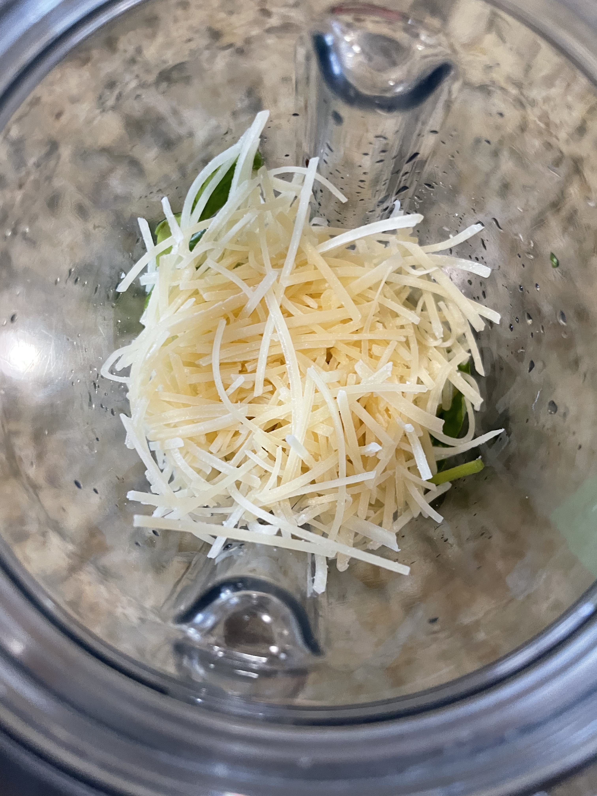
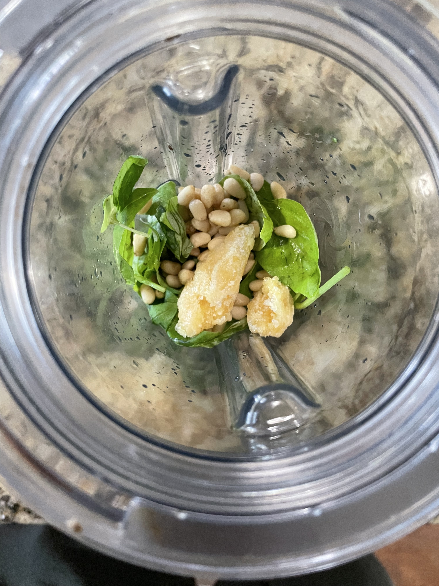
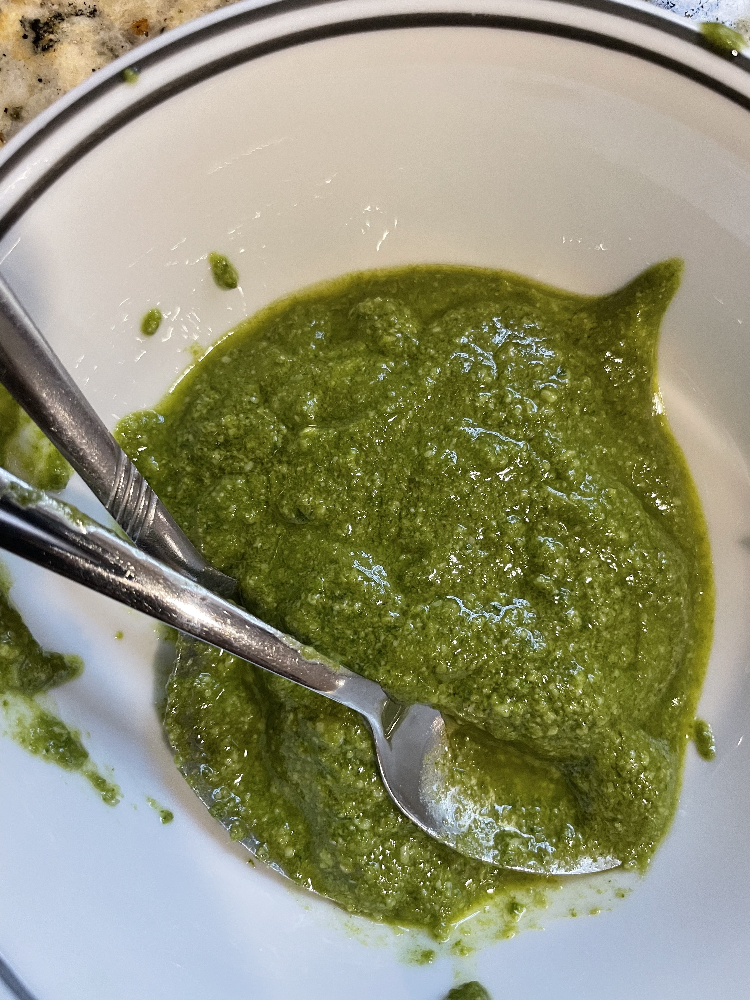
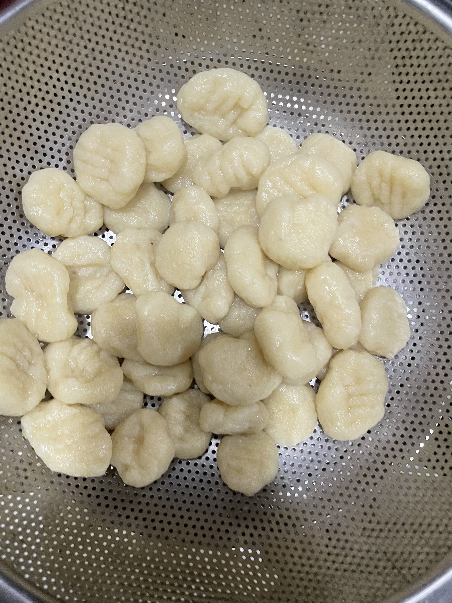
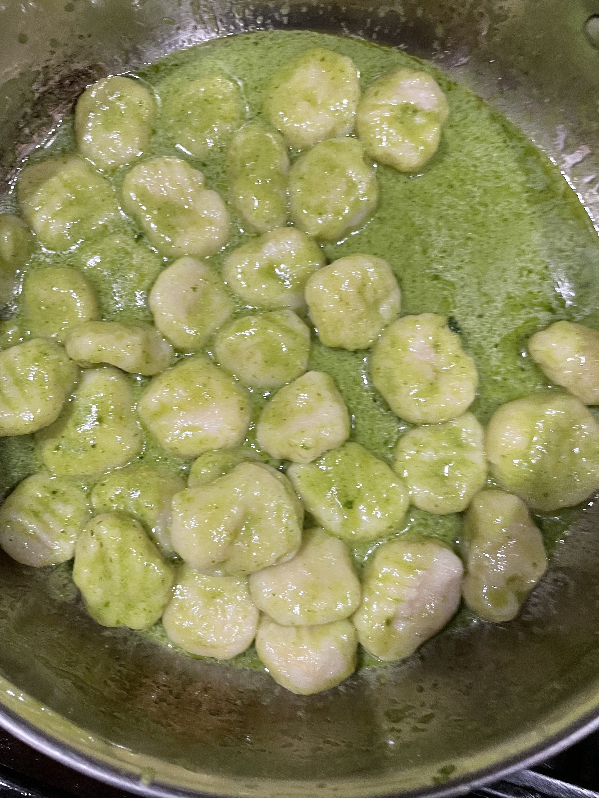

Pesto Gnocchi
What is it?
This pesto gnocchi makes a perfect meal for any occasion, the rich, creamy pesto combined with the tender and fluffy gnocchi gives a 5 start expiriene with just a few simple ingredients.Ingredients:
Pesto
- 2 cups basil
- 1/2 cup parmesean cheese*
- 2-3 cloves of garlic, or to taste
- 1/2 cup toasted pine nuts or cashews
- 1/4 cup olive oil, adjust for consistency
Gnocchi
- 3-4 medium potatoes
- 2-3 cups flour, adjust until desired consistency
- 1 tsp olive oil for boiling
- Pinch of salt for boiling
- Optional tomatoes for garnish
Recipe
Pesto
- Add all the ingredients to a blender but leave half the oil  
- Blend fully and keep adding oil until desired consistency is reached 
Gnocchi
- Boil and peel all of your potatoes
- Rice all of your potatoes into a large mixing bowl
- Add flour 1/4 cup at a time until a dough forms
- Shape your dough into small pieces of gnocchi of any desired shape, make sure the sizes are equal for easy boiling 
- Bring water to a boild with a tsp of olive oil and a pinch of salt
- Add the gnocchi and gently stir for about 2-3 minutes and take out
- Add pesto to a pan with a splash of the pasta water if needed to thin
- Add gnocchi and mix for just a minute until well incorporated 
- Add desried garnish such as cheese or tomatoes and enjoy!